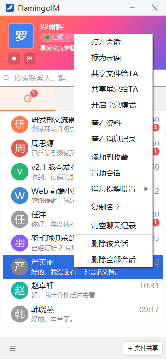
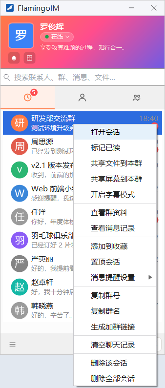
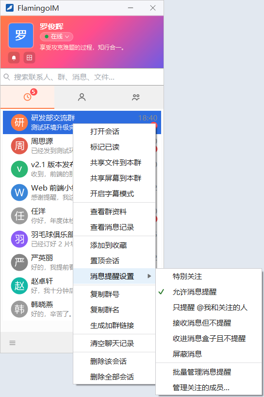
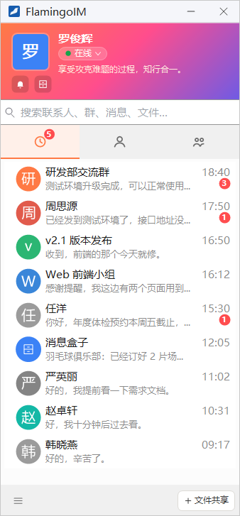
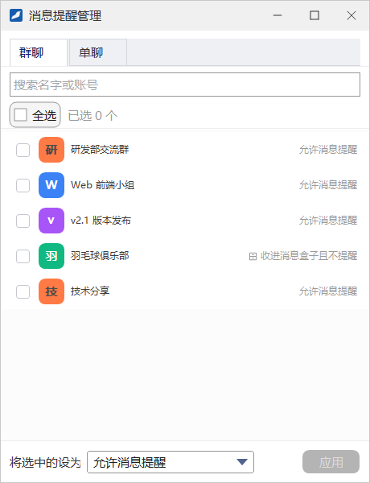

会话列表与消息提醒
主面板的「消息」页签列出你最近的单聊和群聊。本章介绍会话列表上的各种操作，以及怎样按会话设置消息提醒方式，把不那么重要的群收进「消息盒子」，让重要的消息不被淹没。
- 适用：全体员工
- 提醒方式只影响你自己，不影响其他人
会话列表

点主面板的「消息」页签（时钟图标）即可看到会话列表。最近有消息的会话排在上面，每一行显示：
- 对方或群的头像与名称；
- 最后一条消息的摘要；
- 最后一条消息的时间；
- 未读消息数：红色圆形数字。提醒方式设为「接收消息但不提醒」等时数字变为灰色，见下文「消息提醒设置」。
单击一行即打开对应的聊天窗口，并清除该会话的未读数。「消息」页签图标上的红色角标是所有会话的未读总数。
会话右键菜单
右键一个会话会弹出会话菜单。单聊和群聊的菜单略有不同：


| 菜单项 | 作用 |
|---|---|
| 打开会话 | 打开聊天窗口，与单击这一行相同 |
| 标为未读 / 标记已读 | 没有未读消息时显示「标为未读」，点它把会话重新标成未读，提醒自己稍后处理；有未读消息（或已手动标为未读）时显示「标记已读」，点它清除未读 |
| 共享文件给TA / 共享文件到本群 | 把本机的磁盘、文件夹或文件共享到这个会话（详见） |
| 共享屏幕给TA / 共享屏幕到本群 | 打开聊天窗口并开始屏幕共享（详见） |
| 开启字幕模式 | 在桌面上以字幕的形式显示这个会话的消息，不打开聊天窗口；开启后变为「关闭字幕模式」（详见） |
| 查看资料 / 查看群资料 | 单聊打开对方的资料窗口（详见），群聊打开群资料 |
| 查看消息记录 | 打开这个会话的消息记录（详见） |
| 添加到收藏 | 把对方或群放进「联系人」页签的「我的收藏」；已收藏时变为「取消收藏」 |
| 置顶会话 | 把会话固定在列表最上方，置顶的会话底色略深、左侧有一道橙色竖条；已置顶时变为「取消置顶」 |
| 消息提醒设置 ▸ | 设置这个会话的提醒方式，见下一节 |
| 复制名字 | （仅单聊）复制列表上显示的名字 |
| 复制群号 / 复制群名 | （仅群聊）把群号或群名复制到剪贴板 |
| 生成加群链接 | （仅群聊）打开「生成加群链接」窗口：选择有效期（1 天、7 天或永久有效）后生成链接，发给同事即可邀请他们入群；窗口下方的「我生成的链接」可以复制或作废你生成过的链接（详见） |
| 清空聊天记录 | 清空这个会话里你这一方的聊天记录 |
| 删除该会话 | 把这个会话从列表中移除 |
| 删除全部会话 | 清空整个会话列表 |
「清空聊天记录」与「删除会话」的区别清空聊天记录会删除这个会话里你这一方的全部消息，清空后无法恢复；你登录的其他设备会同步清空，对方或其他群成员的记录不受影响。清空需要连接服务器，离线时会提示无法清空。
删除该会话 / 删除全部会话只是把会话从最近会话列表里拿掉，聊天记录不会被删除，以后仍可以在消息记录里查看。
删除该会话 / 删除全部会话只是把会话从最近会话列表里拿掉，聊天记录不会被删除，以后仍可以在消息记录里查看。
消息提醒设置
每个会话都可以单独设置收到消息时的提醒方式。在会话上右键，指向 消息提醒设置，在子菜单里选择，当前的方式前面带勾：

| 提醒方式 | 效果 |
|---|---|
| 特别关注 | 收到消息时，聊天窗口没有打开就直接弹出来；已打开但你没在看时闪烁任务栏按钮；两种情况都会响提示音。对联系人设为特别关注后，他上线或下线时还会弹出提示（你处于「忙碌」状态时不弹）。特别关注最多 50 个，单聊和群聊合计。 |
| 允许消息提醒 | 默认方式。计入未读数并显示红色数字；聊天窗口没有打开时托盘图标闪烁并响提示音。 |
| 只提醒 @我和关注的人 | 仅群聊可选。消息照常计入未读，数字为灰色；只有你被 @（包括 @所有人）、或你关注的成员发言时，才闪烁托盘图标并响提示音。关注哪些成员见下文。 |
| 接收消息但不提醒 | 消息照常计入未读，数字为灰色，不闪烁、不响；但在群里被 @ 时仍然提醒。会话右下角显示一个划掉的铃铛图标。 |
| 收进消息盒子且不提醒 | 会话不再单独出现在列表里，而是汇总到「消息盒子」一行；不闪烁、不响，被 @ 时也只在摘要前加标注。见下文「消息盒子」。 |
| 屏蔽消息 | 仅群聊可选。不计未读、不提醒，会话列表也不因新消息而变化；消息仍会保存，打开群聊窗口照样能看到。 |
子菜单下方还有两项：
- 批量管理消息提醒：一次为多个会话设置提醒方式，见本章最后一节。
- 管理关注的成员…（仅群聊）：选择你在这个群里关注的成员。提醒方式为「只提醒 @我和关注的人」时，这些成员发言会提醒你；其他提醒方式下，他们的消息在摘要前带「[关注] 」字样，便于一眼认出。
在其他地方也能设置联系人的右键菜单、群的右键菜单里都有同样的「消息提醒设置」，联系人资料窗口里的「消息提醒」下拉框也可以设置，几处的设置是同一份。提醒方式保存在服务器上，在别的电脑登录时依然有效。
消息盒子
不需要实时关注、但又不想屏蔽的群（例如兴趣群），可以收进消息盒子。下面以把「羽毛球俱乐部」收进消息盒子为例：
- 在会话列表中右键「羽毛球俱乐部」，选 消息提醒设置 → 收进消息盒子且不提醒。
- 这个群从会话列表中消失，列表里出现一行 消息盒子，摘要显示最近一条被收进的消息，如「羽毛球俱乐部：已经订好 2 片场地……」。
- 单击「消息盒子」这一行（或主面板头部的消息盒子按钮、系统菜单中的 消息盒子），打开消息盒子窗口。

- 窗口里列出所有收进消息盒子的会话，外观与会话列表相同。单击一行打开对应的聊天窗口并清除未读，消息盒子窗口保持打开。
- 右键一行弹出与会话列表相同的菜单。把提醒方式改成别的之后，这个会话随即移出消息盒子、回到会话列表。
- 点左上角的 全部标为已读 清除盒子里所有会话的未读（没有未读时按钮为灰色）；点右上角的 批量管理 打开「消息提醒管理」窗口。
- 右键会话列表里的「消息盒子」那一行，也可以选择「全部标为已读」或「批量管理消息提醒」。
批量管理消息提醒
需要一次调整很多会话的提醒方式时，用「消息提醒管理」窗口。从任意会话的 消息提醒设置 → 批量管理消息提醒，或消息盒子窗口的 批量管理 打开：

- 在顶部选择 群聊 或 单聊 页签。每一行右侧显示该会话当前的提醒方式。
- 勾选要修改的会话。可以在 搜索名字或账号 框中输入关键字筛选，也可以勾 全选；旁边会显示「已选 N 个」。
- 在底部 将选中的设为 下拉框里选择新的提醒方式。
- 点 应用（没有勾选任何会话时按钮为灰色）。
特别关注最多 50 个（单聊与群聊合计），一次设置会超出上限时，窗口会提示你减少勾选或先取消一些特别关注。